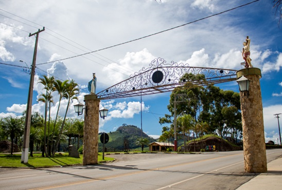
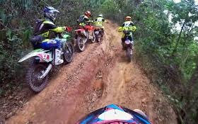

Pontos Turisticos
| Pedra | ||
| Informações
Pedra Bela é um município brasileiro do estado de São Paulo.Estando a uma altitude de 1120 metros, ideal para uma subida deslumbrante de 204 degraus até a chegada no topo de Pedra Bela, um visual único entre a grande São Paulo e Minas Gerais. | ||
| Santuario da Pedra | ||
| Informações
Local com vista maravilhosa da cidade! Ponto de saída da tirolesa. | ||
| Portal | ||
| Informações
Com bela quedas de água cristalina e abundante, com lugar para um banho de sol e se deliciar nas águas de Pedra Bela, a cerca de 10km entre o centro da cidade e a cachoeira, acesso através de uma modesta estrada de terra, a mesma, possui três quedas de baixo volume de água, ideal para um banho e admirar o paisagem com bons companhias. | ||
|  |  |
|
| Deck de Pedra Bela | ||
| Informações
Acesse: Trilhas | ||
 |
 |  |